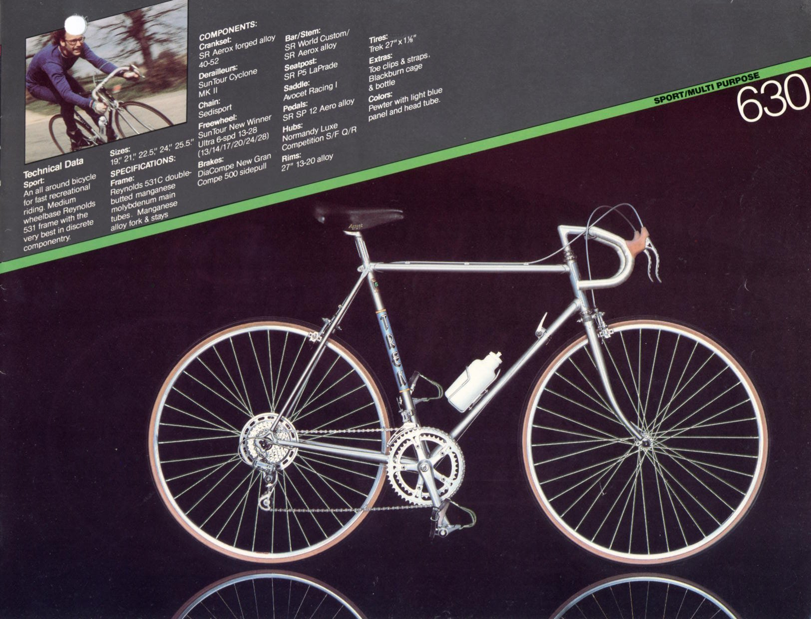

The Ole Trek, a Memorial
The Origin
It was summer, 2010. I was getting ready to start my freshman year of high school. I was going to be on the cross country team in the fall, so we were meeting every night for what we called "summer running." We would meet at "the trails", shown on the map below, where we would run anywhere between 5 and 15 miles. I think that summer, I probably stuck with closer to 5 miles per day. Our cross country coach, Neil Garrison, was a proponent of high mileage. If I'm remembering right, each summer I ran 350, 500, 1000, and 700 miles for each of the 4 summers of high school, which seems absurd at this point.
Anyway, that summer I weighed in at a whopping 95 pounds, probably 5'6''. I had the metabolism of a freshman in high school and was burning a lot of calories. I remember I had to choke down protein shakes after I ran so that I would stay at a healthy weight. Those were also the glory days that I cultivated my love for the peanut butter and jelly sandwich - I would eat a double decker PBJ every night before bed. I've included an example of a typical cross section for reference:
I digress. This was the summer that I came into possession of my first serious bike. My neighbor, David Walling, the husband of my long-time hair cutter Janet Walling, was looking to get rid of an old bike he had in his garage. He said he hadn't ridden it in 12 years, but it was a very nice, trusty bike that he had ridden for many years. It was a 1983 trek 630. For those curious, its MSRP was $565, or $1,474.43 today. I found its original catalog!
David first offered it to Elizabeth, who was taller than me at the time, but for whatever reason she declined! I piped in that I was interested, so we lowered the seat all the way down to the top tube and I gave it a test ride. I remember marveling at its efficiency - it was the first non-Walmart-bike I had ever ridden. David generously told me to take it for free! I was giddy with excitement. I rode that thing everywhere. I unfortunately don't have any pictures of it in its original form - that was a couple years before I got my first smart phone (I got my first flip phone that summer also!). But here's a picture of her in her prime:

Bike Maintenance
With the ole trek, I learned that things can be useful for a long time. The trek served David Walling for many years, and it served me faithfully for 10 years as well. Over these 10 years, I have had to learn how to care for her. I have changed many a tire, replaced her brake cables and housing, adjusted her shifters, replaced her bottom bracket, changed her handlebars, upgraded her wheels, replaced her chain. I've learned to listen to how she runs so I can know when to grease her chain, or when to adjust her non-indexed shifters. I've learned hard lessons of what happens when I don't care for her, too. There is something special about entrusting my life, riding down an hill at 30+ mph with a 30+ year old machine that I maintain and have come to intimately know.
Commutes
The ole trek has traveled with me all around. She's been my primary form of transportation for 10 years, rain or shine, snow or tornado (there's a fun story). Some days, the commutes are the highlight of my day, an absolute delight. Others have been positively miserable, where I am desperate to get inside to warm up my cold extremities. Some days my legs feel like they are moving with strength that is not my own. Others, I feel sluggish. But I wouldn't have it any other way. Here are some of our commutes:
Cargo
After studying in Singapore, I was inspired to upgrade the ole trek to cary cargo. Something about the idea of carrying unwieldy things on the back of a bike excites my soul. I purchased the folding baskets shown in the above picture, and I used those things all the time, for everything. One memorable use was to pick up pumpkins with my family from the Crowley pumpkin farm. Between Mom, Dad and I we brought back quite the haul! I believe I measured the big one in the milk crate to be 25 pounds.


The End
The ole trek was stolen from my enclosed front porch on Sunday, September 13, 2020 and she will be sorely missed. I am grateful for our 10 years together- learned a lot with her and will treasure memories of her as long as I live.